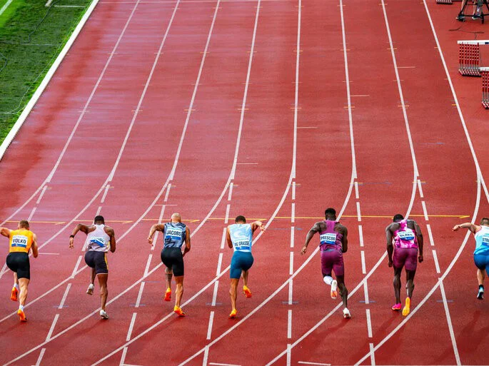

Modalidade esportiva
Corrida
A corrida acompanha a humanidade desde a Antiguidade e está entre as formas mais antigas de competição esportiva. Provas de corrida faziam parte dos Jogos Olímpicos da Grécia Antiga e continuam presentes nos Jogos modernos desde 1896.